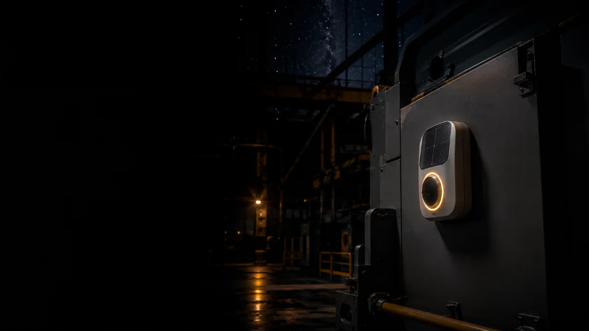
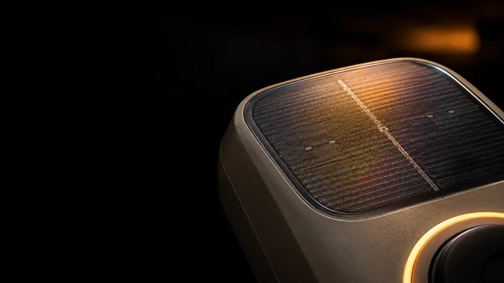
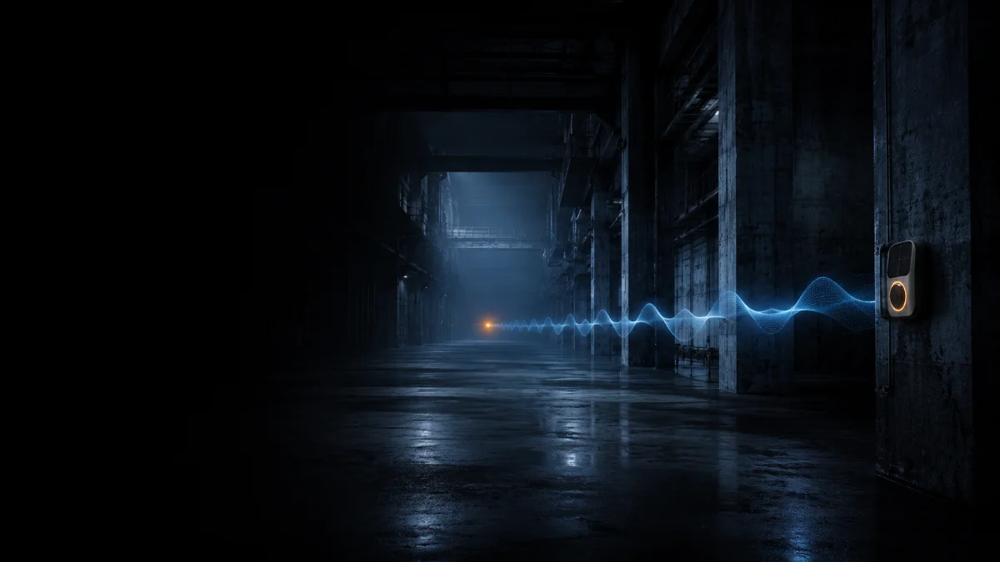
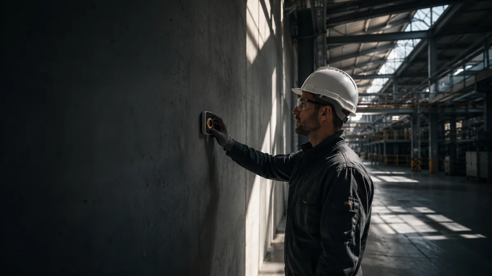
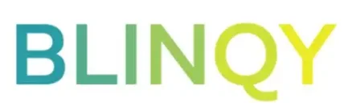
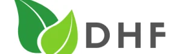

Alerte industrielle autonome
Une alerte industrielle fiable et autonome
Un bouton connecté qui se pose partout, ne réclame ni pile ni câble, et porte à travers le béton d'un bout à l'autre du site.
Portée mesurée
à travers le béton
Autonomie
zéro pile, zéro câble
Installation
sans travaux

Énergie · Photovoltaïque organique
Autonome, pour de bon
Une cellule photovoltaïque organique alimente SUN-Link à partir de la seule lumière ambiante — l'éclairage d'un atelier suffit. Aucune pile à remplacer, aucun câble à tirer : le bouton fonctionne à vie, sans maintenance.

Communication · BLE Coded PHY
Une portée qui traverse le béton
Grâce au BLE Coded PHY, chaque appel d'assistance porte à plus de 800 mètres, d'un bout à l'autre du site — là où la radio classique s'effondre entre les murs. Une évolution du Bluetooth qui parle plus loin, pas plus fort.
Cas d'usage
Conçu pour les environnements exigeants
Là où l'appel d'assistance et l'alerte sécurité se heurtent aux piles, au câblage ou à la portée.
Les portées et autonomies indiquées correspondent aux cibles du projet, en cours de validation en conditions réelles chez le client pilote.
Pensé pour le terrain, du poste à la zone la plus isolée

Déploiement
Posez-le. Il se connecte.
SUN-Link est conçu pour une installation autonome : fixez-le où le besoin existe, il rejoint votre supervision en quelques secondes. Sans travaux, sans électricien, sans arrêt de production.
Comparatif
Pourquoi SUN-Link est différent
| Critère | Boutons à piles | Systèmes filaires | SUN-Link |
|---|---|---|---|
| Énergie | Piles à remplacer | Alimentation secteur | Autonome — lumière |
| Installation | Rapide | Câblage long, coûteux | Quelques minutes |
| Portée en bâtiment | Limitée | Selon le câble | 800 m+ béton |
| Maintenance | Remplacement piles | Intervention filaire | Aucune |
Faites glisser le tableau horizontalement pour tout voir →
Le consortium
Une chaîne de compétences européenne
Chaque partenaire apporte un maillon de la solution, du composant à la validation en conditions réelles.

BLINQY
Charleroi · Belgique
Conception du nœud IoT et de l'électronique embarquée.
e-peas
Partenaire
Gestion de puissance ultra-basse consommation (PMIC).
Enfucell
Partenaire
Stockage d'énergie souple associé à la récupération OPV.

DHF
Ovifat · Client pilote
Validation en environnement opérationnel réel.
Feuille de route
Du laboratoire au terrain en 9 mois
Le projet fait progresser SUN-Link du TRL 5 — validé en laboratoire — au TRL 7 — prototype démontré en conditions réelles chez le client.
Mois 1–2 · TRL 5
Consolidation
Validation laboratoire consolidée, spécifications du nœud autonome et de la chaîne logicielle.
Mois 3–5 · TRL 6
Prototype intégré
Intégration OPV + PMIC + BLE longue portée, firmware basse consommation, tests représentatifs.
Mois 6–8 · TRL 6→7
Déploiement pilote
Installation chez DHF (Ovifat), mesures de portée et d'autonomie en conditions industrielles réelles.
Mois 9 · TRL 7
Démonstration
Prototype démontré en environnement opérationnel : jalon final du dossier JEWEL.
Impact
Ce que change un bouton sans pile
Environnemental
Chaque bouton déployé, c'est des piles jetables évitées à vie : moins de déchets, moins de logistique de remplacement.
Économique
Pas de câblage, pas de maintenance de piles, pas d'arrêt de production : le coût total de possession chute.
Stratégique
Une chaîne de valeur IoT conçue et validée en Europe, au service de la souveraineté numérique.
Contact
Parlons de votre terrain
Évaluateur, partenaire ou industriel intéressé par un pilote : écrivez-nous, nous répondons rapidement.